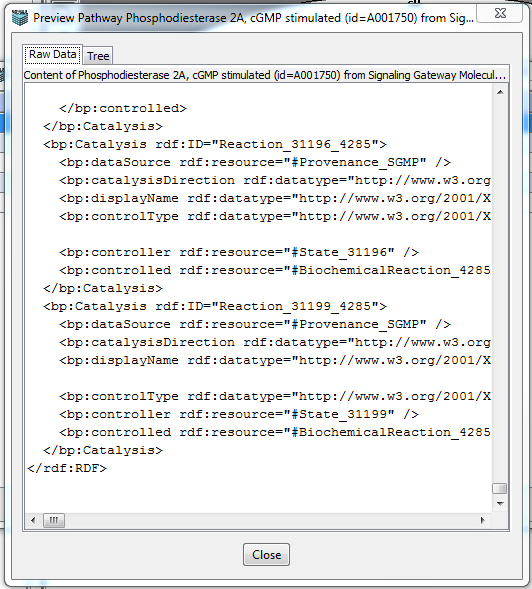

Import a pathway in BioPAX format from a local file or from a web address.
Selecting the Import Pathway menu item yields a submenu to choose between importing a BioPAX file from a web address, a local file, or to try one of several built-in examples.
Using the example to illustrate, select a pathway.

Once selected, the BioPAX file can then be either Previewed or imported
Preview in either raw data markup or tree view is available:


The processing of the BioPAX file after importing is described in the Imported Pathway View